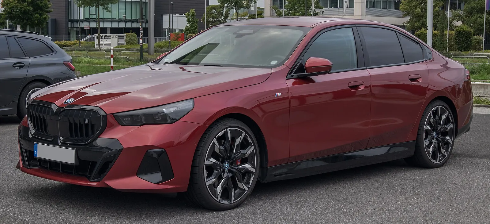
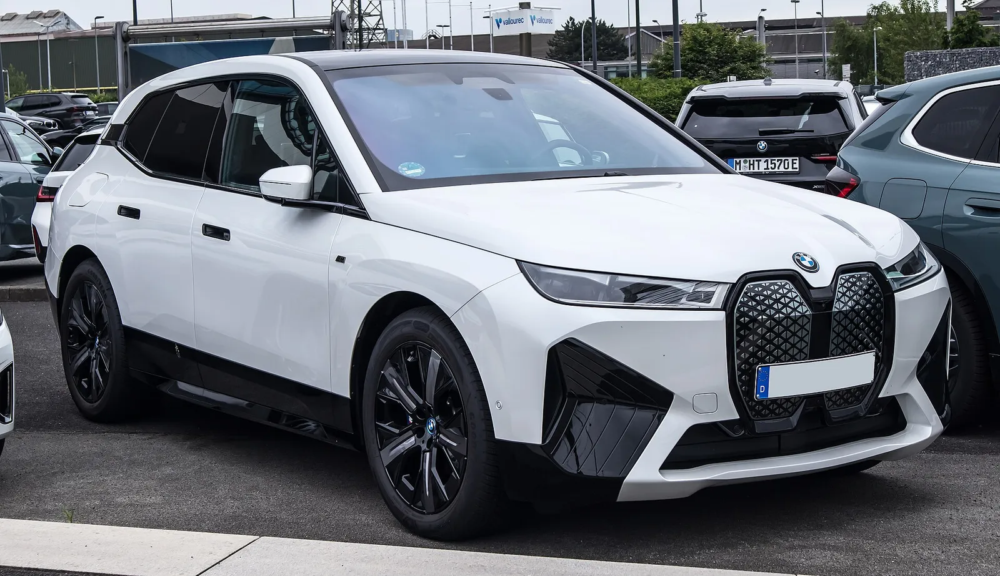
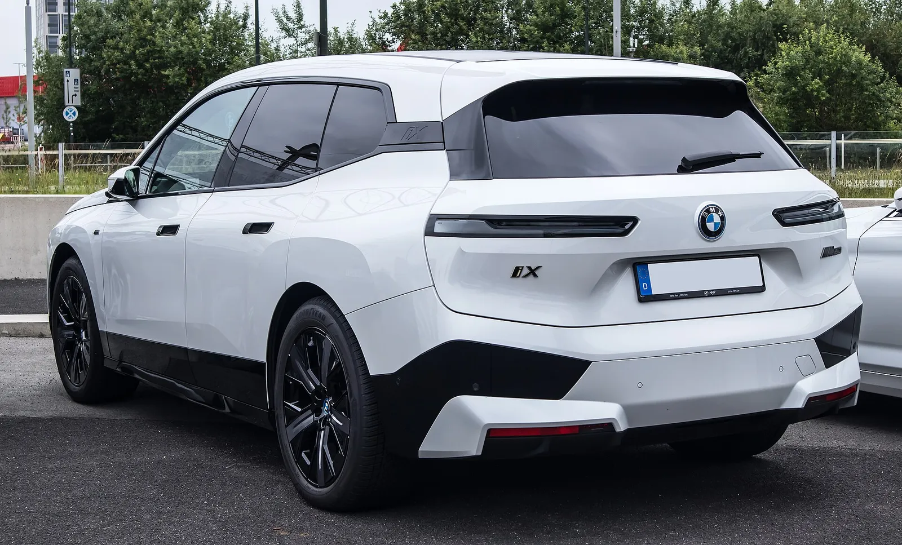
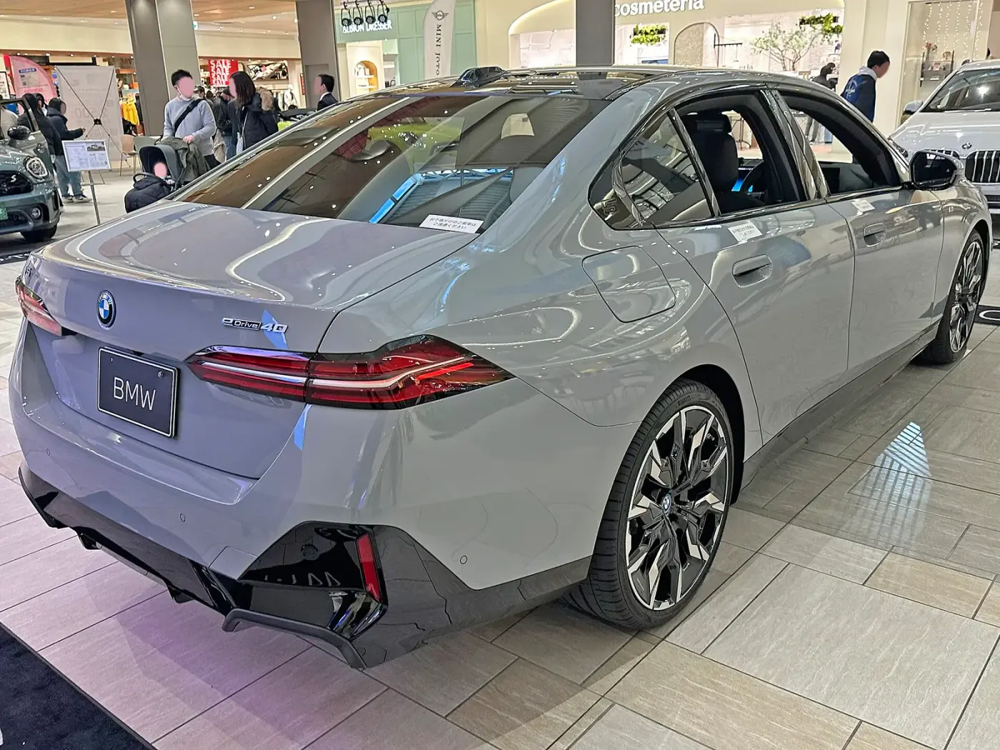
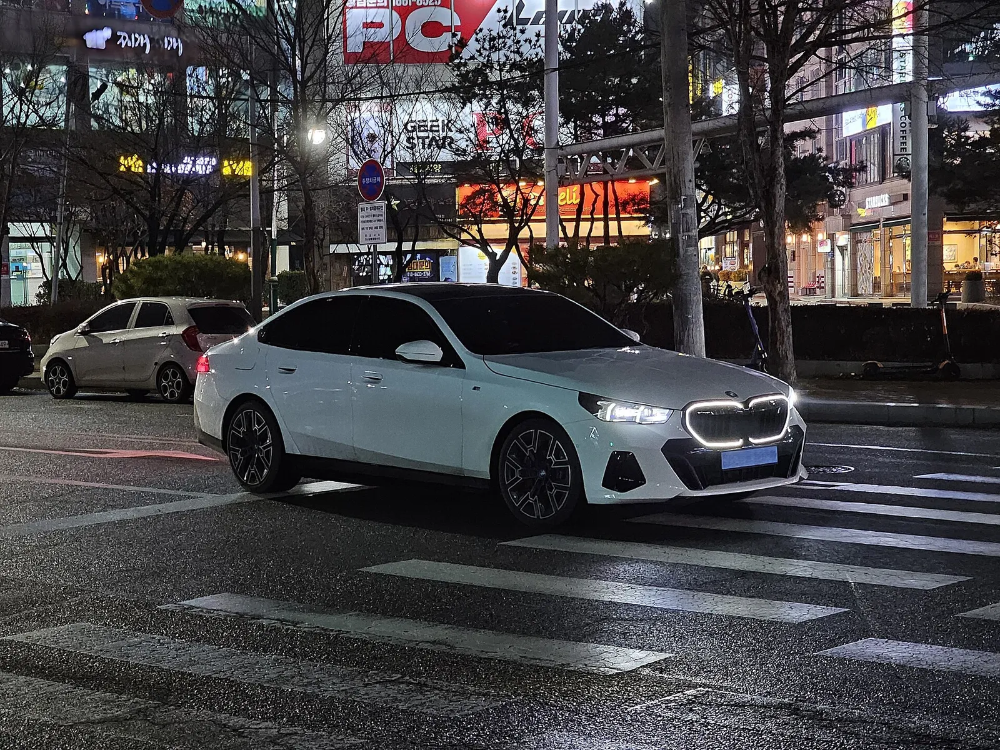
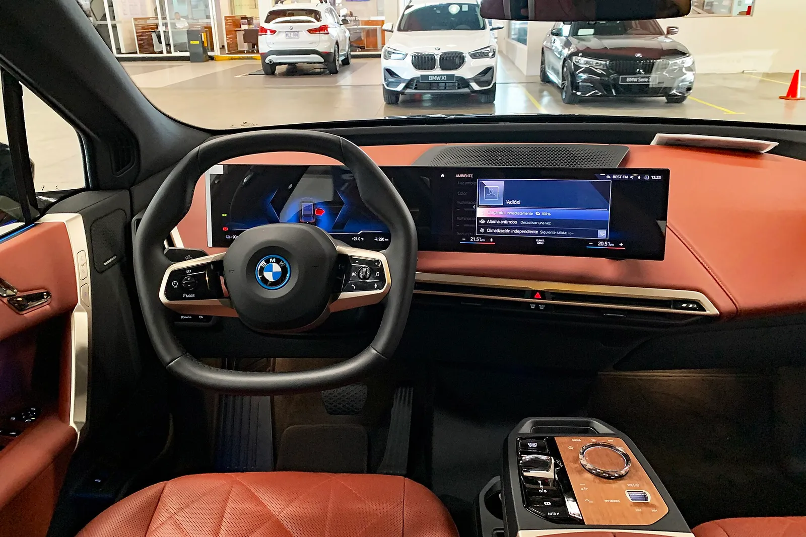
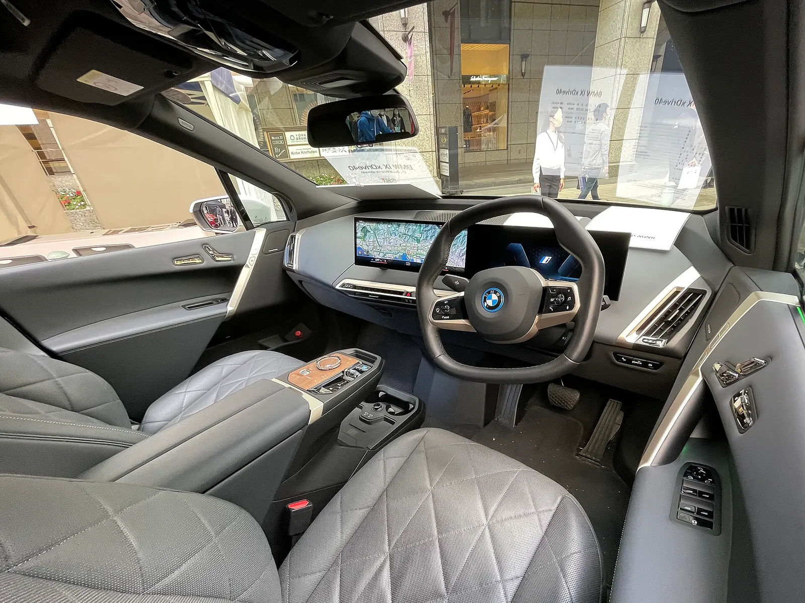
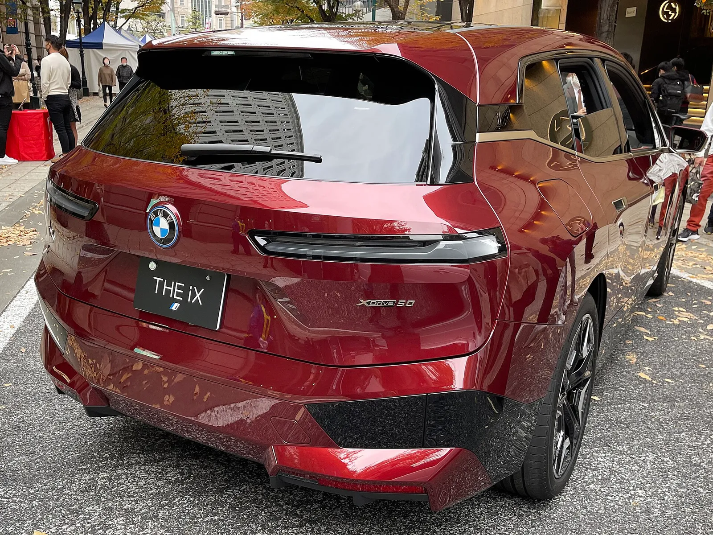
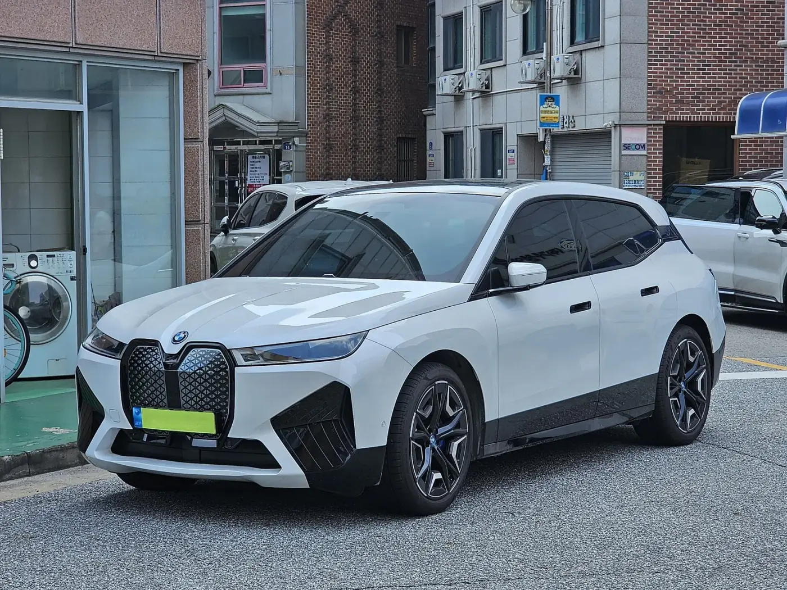

▲ BMW i5(G60) xDrive40 M 스포츠 프로 후면. 이번 한정 에디션 차량이 아니며 파이토닉 블루 색상도 아니다 ⓒ M 93 (Wikimedia Commons, CC BY-SA 3.0 de)
"10대·30대만 판다." 오토트리뷴 제목을 보고 "10대와 30대 연령층만 살 수 있나" 싶었다면 오독이다. BMW 코리아가 10월 8일 오후 3시 BMW 샵 온라인에서 여는 전기차 한정 에디션은 i5 xDrive40 M 스포츠 파이토닉 블루 에디션 10대, iX xDrive45 M 스포츠 프로 스페이스 실버 에디션 30대, 합쳐서 40대다. 연령 조건은 어느 보도에도 나오지 않는다. 가격은 각각 1억700만 원, 1억2,960만 원이다.
이 글은 두 에디션의 수량·가격·사양, 일반 트림과의 가격 차이, 보조금 해당 여부를 따로 계산해 정리한다. 같은 BMW의 노이어 클라쎄 첫 양산차 iX3는 iX3 국내 출시 기사와 iX3 노이어 클라쎄 비교 기사에서, 3시리즈 신형과 i3는 3시리즈 G50·i3 기사에서 다뤘다. 이번에 나오는 i5·iX는 노이어 클라쎄 이전 세대 전기차다.
1. "10대·30대"는 연령이 아니라 수량이다
모터그래프(idxno=44638)·카가이(62174)·오토헤럴드(61777)는 같은 내용을 전한다. 두 모델의 한정 수량은 i5 10대, iX 30대다. 오토트리뷴(46097)의 제목 "10대·30대만 판다"는 이 수량을 줄인 표현으로, 아주경제(10월 2일)와 지피코리아 등 다른 매체 본문에서도 총 수량 40대로 확인된다. 연령대에 따른 구매 제한은 확인된 어떤 보도에도 없다. 구매 자격(성인·면허 등 일반 계약 조건)은 BMW 샵 온라인 약관을 확인하지 못했으므로 단정하지 않는다.
| 구분 | i5 에디션 | iX 에디션 |
|---|---|---|
| 정식 이름 | BMW i5 xDrive40 M 스포츠 파이토닉 블루 에디션 | BMW iX xDrive45 M 스포츠 프로 스페이스 실버 에디션 |
| 한정 수량 | 10대 | 30대 |
| 가격 | 1억700만 원 | 1억2,960만 원 |
| 수량 비중(40대 중) | 25% | 75% |
| 총 판매가 합계(카프리즘 계산) | 10대×1억700만 원 = 10억7,000만 원 | 30대×1억2,960만 원 = 38억8,800만 원 |
| 판매처·일시 | BMW 샵 온라인 전용, 10월 8일 15시 | BMW 샵 온라인 전용, 10월 8일 15시 |
두 에디션이 모두 팔리면 소비자가 기준 약 49억5,800만 원(10억7,000만 원 + 38억8,800만 원)어치다. 카프리즘이 단순 곱셈으로 계산한 값이며 할인·옵션·탁송료는 반영하지 않았다.
📍 오독하기 쉬운 두 지점
① "10대·30대"는 나이가 아니라 대수다. ② 이번 에디션은 노이어 클라쎄 신형이 아니라 현행 i5(G60)와 iX(I20) 기반이다. 판매 시작 시각이 10월 8일 오후 3시로 보도돼 있어, 이 글을 쓴 10월 5일 시점에는 판매가 시작되지 않았다.
2. i5 파이토닉 블루 에디션 — 10대, 1억700만 원
보도에 따르면 외장은 파이토닉 블루 메탈릭이고 20인치 투톤(블랙·그레이) 휠과 다크 블루 메탈릭 M 스포츠 브레이크를 단다. M포스트는 BMW 아이코닉 글로우 키드니 그릴도 언급했다. 실내는 블랙·아틀라스 그레이 메리노 가죽에 다크 오크 하이그로스 트림, 크리스털 글라스 포인트다. 합산 최고출력 394마력, 합산 최대토크 60.1kg·m, 정지 상태에서 시속 100km까지 5.4초, 국내 인증 1회 충전 주행거리는 412km다. 카매거진과 M포스트는 인테그랄 액티브 스티어링(후륜 조향)과 어댑티브 서스펜션, 바워스&윌킨스 서라운드 사운드를 장착한다고 전했다.

▲ BMW i5(G60) xDrive40 M 스포츠 프로 전면. 이번 한정 에디션 차량이 아니며 파이토닉 블루 색상도 아니다 ⓒ M 93 (Wikimedia Commons, CC BY-SA 3.0 de)
| 항목 | 내용 | 보도 매체 |
|---|---|---|
| 외장 색상 | 파이토닉 블루 메탈릭 | 모터그래프·카가이·M포스트 |
| 휠·브레이크 | 20인치 투톤 휠, 다크 블루 메탈릭 M 스포츠 브레이크 | 카매거진·M포스트 |
| 실내 | 블랙·아틀라스 그레이 메리노 가죽, 다크 오크 트림, 크리스털 글라스 | 모터그래프·M포스트 |
| 구동·출력 | 듀얼 모터 xDrive, 합산 394마력·60.1kg·m | 전 매체 공통 |
| 가속·주행거리 | 0→100km/h 5.4초, 국내 인증 412km | 전 매체 공통 |
| 편의·주행 | 인테그랄 액티브 스티어링, 어댑티브 서스펜션, 바워스&윌킨스 사운드 | 카매거진·M포스트 |
한 가지 짚을 점이 있다. i5 에디션 이름에는 M 스포츠만 있고 프로가 없다. 시중 가격표에서 xDrive40의 M 스포츠 프로 패키지와 M 스포츠 패키지는 가격이 다르므로(4장 참조), 이 에디션이 어느 트림 기반인지는 BMW 공식 자료로 확인하지 못했다.
3. iX 스페이스 실버 에디션 — 30대, 1억2,960만 원
iX 에디션은 스페이스 실버 메탈릭 외장에 M 라이트 섀도 라인 헤드램프·테일램프, 레드 M 스포츠 브레이크 캘리퍼, 21인치 에어로다이내믹 멀티컬러 휠을 적용한다. 실내는 M 스포츠 블랙·아틀라스 그레이, 앤트러사이트 헤드라이너, 크리스털 글라스 컨트롤, 마사지 기능이 들어간 앞좌석 M 멀티펑션 시트다. M포스트는 파노라마 글라스 루프 스카이 라운지, 하만카돈 사운드, 무선 충전을 열거했다. 합산 408마력, 71.4kg·m, 0→100km/h 5.1초, 국내 인증 주행거리 446km다.

▲ BMW iX(I20) 전면. 한정 에디션 차량이 아니며 색상(스페이스 실버)과 휠 사양은 확정하지 않음 ⓒ M 93 (Wikimedia Commons, CC BY-SA 3.0 de)

▲ BMW iX(I20) 후면. 전시 사양과 이번 에디션 사양은 같지 않을 수 있다 ⓒ M 93 (Wikimedia Commons, CC BY-SA 3.0 de)

▲ 일본 전시장의 BMW i5 eDrive40 M 스포츠(G60) 후면. 파이토닉 블루 에디션 차량이 아니며 휠·색상은 에디션과 다르다 ⓒ Tokumeigakarinoaoshima (Wikimedia Commons, CC BY-SA 4.0)
4. 일반 트림과 얼마나 다른가 — 카프리즘 계산표
한정판의 가치는 결국 일반 트림 대비 얼마를 더 내느냐다. 국내 공식 가격표 원문은 열지 못해(BMW 코리아 페이지 응답 지연) 가격 비교 사이트와 자동차 DB의 2026년식 표시 가격을 기준으로 차액을 계산했다. 사이트마다 개별소비세 반영 시점이 달라 ±수십만 원 오차가 있을 수 있다.
| 비교 대상 | 일반 트림 가격 | 에디션 가격 | 차액 | 차액 비율 | 가격 출처 |
|---|---|---|---|---|---|
| i5 xDrive40 M 스포츠 프로 | 1억580만 원 | 1억700만 원 | +120만 원 | +1.13% | 겟차(정가 표기) |
| i5 xDrive40 M 스포츠 패키지 | 1억380만 원 | 1억700만 원 | +320만 원 | +3.08% | 카동 표시가(연식별 1억380만~1억690만 원 범위) |
| iX xDrive45 M 스포츠(P1-1) | 1억2,480만 원 | 1억2,960만 원 | +480만 원 | +3.85% | 겟차(4월 시점 가격) |
| iX xDrive45 M 스포츠(P3-0) | 1억2,680만 원 | 1억2,960만 원 | +280만 원 | +2.21% | 사전 팩트체크 확인값(4월 시점) |
| iX xDrive45 M 스포츠 퍼스트 에디션 | 1억2,710만 원 | 1억2,960만 원 | +250만 원 | +1.97% | 겟차 |
i5는 M 스포츠 프로 기준이면 120만 원, 패키지 기준이면 320만 원 정도의 웃돈이다. iX는 일반 M 스포츠 대비 480만 원이다. 같은 4월 시점 가격에서 M 스포츠 P2·P1-1은 1억2,480만 원, P3-0은 1억2,680만 원(P1-1보다 200만 원 비쌈)이므로 P3-0 기준 차액은 280만 원이다. 어느 쪽이 에디션의 실제 기반인지는 공식 자료로 확인하지 못했고, 가격은 4월 시점이라 현재 정가와 다를 수 있다. 다만 iX 에디션 이름은 M 스포츠 프로인데 비교 가능한 일반 M 스포츠 프로 가격표는 찾지 못했다. 따라서 위 차액은 옵션 구성이 완전히 같다는 가정이 아니며, 에디션에 포함된 마사지 시트·스카이 라운지·특별색이 일반 트림에서 옵션으로 얼마인지는 확인하지 못했다.
📍 정가와 실구매가는 다르다
겟차는 i5 xDrive40 M 스포츠 프로의 평균 할인을 1,279만 원(약 12%), 평균 실구매가를 약 9,300만 원대로 표시한다. 같은 사이트의 iX xDrive45 M 스포츠는 7월 기준 최대 1,300만 원 할인이다. 한정 에디션은 정가 기준 가격만 공개돼 있고 추가 할인 여부는 확인하지 못했으므로, 실제 부담액은 일반 트림 할인 후 가격보다 클 수 있다. 이는 중개 사이트 수치이며 BMW 코리아가 공시한 할인이 아니다.
프리미엄을 실구매가로 바꿔 보면 — 민감도 계산
에디션은 정가만 공개돼 있고 일반 트림은 딜러 할인이 붙는다. 일반 트림 정가에서 할인율(0·5·10·12%)을 뺀 가격과 에디션 정가의 격차를 계산했다(격차 = 에디션 정가 − 일반 트림 정가×(1−할인율)). 12%는 겟차가 표시한 i5 평균 할인율(약 12%)이고, 나머지는 가정값이다. 에디션에 할인이 전혀 없다는 가정이므로 실제 격차는 이보다 작을 수 있다.
| 기준 트림(정가) | 할인 0% | 할인 5% | 할인 10% | 할인 12% |
|---|---|---|---|---|
| i5 M 스포츠 프로(10,580) | +120 | +649 | +1,178 | +1,390 |
| i5 M 스포츠 패키지(10,380) | +320 | +839 | +1,358 | +1,566 |
| iX M 스포츠 P1-1(12,480) | +480 | +1,104 | +1,728 | +1,978 |
| iX M 스포츠 P3-0(12,680) | +280 | +914 | +1,548 | +1,802 |
핵심은 정가 차액 1~4%대가 아니라 할인 후 격차다. 일반 트림을 10% 깎아 사는 구매자는 i5에서 약 1,200만~1,400만 원, iX에서 약 1,500만~1,700만 원을 더 내고 에디션을 사는 셈이다. 에디션이 특별색·마사지 시트·루프 등 옵션 묶음을 포함한다면 그 일부가 상쇄되지만, 그 옵션의 개별 가격은 확인하지 못했다.

▲ 한국 도로의 BMW i5(G60). 일반 트림 차량이며 이번 에디션과 사양이 다를 수 있다 ⓒ Damian B Oh (Wikimedia Commons, CC BY-SA 4.0)
5. 보조금은 받을 수 있나 — 가격 기준으로 계산
2026년 전기 승용차 구매보조금은 차량 가격 구간으로 지급률이 갈린다. 기후에너지환경부의 개편안과 이를 인용한 보도에 따르면 5,300만 원 미만 100%, 5,300만~8,500만 원 50%, 8,500만 원 이상 0%다(2027년에는 5,000만 원·8,000만 원으로 낮아질 예정). 국비 최대액은 580만 원, 내연차 전환 시 최대 100만 원이 추가돼 680만 원이다. 두 에디션은 가격이 8,500만 원을 크게 웃돌아 국비는 해당되지 않는다. 가격 기준액을 보도자료 원문 표로 직접 대조하지는 못했고(정책브리핑 요약본과 2차 보도로 확인), 차량 가격 산정에 옵션·부가세가 어떻게 들어가는지의 세부 정의도 확인하지 못했다.
| 항목 | i5 에디션 | iX 에디션 |
|---|---|---|
| 에디션 가격 | 1억700만 원 | 1억2,960만 원 |
| 50% 구간 상한(8,500만 원)과의 차이 | 2,200만 원 초과 | 4,460만 원 초과 |
| 2026년 국비 지급률 | 0% | 0% |
| 국비 최대 580만 원 중 수령 가능액 | 0원 | 0원 |
| 전환지원금(최대 100만 원) | 보조금 지급률에 연동되는 방식이어서 국비 0%면 0원에 가까울 것으로 추정(단정 못 함). 출고 3년 이상 내연차 처분이 별도 조건 | 동일 |
| 지자체 보조금 | 지자체별 상이, 국비 대상 여부와 연동되는지 확인 못 함 | 동일 |
✅ 이 두 차를 사려는 사람이 확인할 것
· 국비 0원 기준이므로 보조금을 전제로 한 자금 계획은 세우지 말 것
· 전환지원금은 출고 후 3년이 지난 내연차를 처분해야 하고(가족 간 증여·판매, 하이브리드차는 제외) 국비 지급률과의 연동 여부는 확인하지 못했고 국비 0%인 차에는 0원에 가까울 것으로 추정한다. 지자체 보조금이 가격 상한 때문에 막히는지는 거주지 환경과·무공해차 통합누리집에서 직접 확인 필요(지자체분은 이번 조사에서 확인하지 못함)
· 취득세·공채·탁송료는 별도다. 판매 가격에 포함 여부는 BMW 샵 온라인 안내에서 확인
· 8,500만 원 미만 트림(예: i5 eDrive40 SE 8,490만 원, 카동 표시가)은 50% 구간이지만 이번 에디션과 다른 차다
지자체별 금액 차이와 2027년 기준선 변화는 2027년 보조금 기준선 기사와 지자체 보조금 비교 기사에 정리했다.
6. 구매는 어떻게 — 온라인 한정 에디션 구조
BMW 코리아는 온라인 한정 에디션을 5월·7월·10월에 확인되는 등 자주 내놓고 있다. 5월 12일 봄·여름 에디션 9종, 7월 9일 iX1·i4·i5 BEV 패밀리 에디션 3종이 BMW 샵 온라인으로 판매됐다(헤럴드 보도 2건 확인). 이번 10월 에디션도 같은 채널, 같은 방식이다. 판매 시작 시각과 판매처 외에 선착순 여부, 계약금·결제 방식, 인도 시기, 개인·법인 구분은 어느 보도에서도 확인하지 못했다. 출시 1분 만에 완판됐다는 과거 사례 언급은 검색 요약에서 봤지만 이번 에디션에 대한 근거는 없다.
| 판매일(15시) | 구성 | 수량·가격 예시 |
|---|---|---|
| 5월 12일 | 봄·여름 에디션 9종(M2·M3·M4·M5·XM·X1·X2 등) | M2 쿠페 15대 9,850만 원, X1 40대 7,050만 원 |
| 7월 9일 | BEV 패밀리 에디션 3종(iX1·i4 그란 쿠페·i5 eDrive40) | iX1 30대 7,080만 원, i4 10대 8,960만 원, i5 20대(i5 가격은 보도 표기가 엇갈려 생략) |
| 10월 8일 | i5 xDrive40 파이토닉 블루·iX xDrive45 스페이스 실버 | i5 10대 1억700만 원, iX 30대 1억2,960만 원 |
7월에는 i5 eDrive40(후륜 단일모터, 340마력)이 20대로 나왔고, 이번엔 듀얼모터 xDrive40이 10대다. 수량이 7월 20대에서 절반으로 줄었다는 점은 보도 수치의 단순 비교이며, 소진 속도는 확인된 자료가 없다.

▲ BMW iX 실내(커브드 디스플레이). 이번 에디션은 블랙·아틀라스 그레이 실내로 보도돼 이 사진의 주황색 실내와 다르다 ⓒ Mariordo (Mario Roberto Durán Ortiz, Wikimedia Commons, CC BY-SA 4.0)

▲ 일본 전시 차량인 우측 핸들 BMW iX xDrive40 실내. 한국 판매 사양·에디션의 블랙·아틀라스 그레이 실내와 다를 수 있다 ⓒ Tokumeigakarinoaoshima (Wikimedia Commons, CC BY-SA 4.0)

▲ 일본 거리 전시 중인 BMW iX xDrive50 후면. 에디션 사양(스페이스 실버)과 무관한 일반 차량이다 ⓒ Tokumeigakarinoaoshima (Wikimedia Commons, CC BY-SA 4.0)

▲ 한국 도로의 BMW iX(I20). 일반 트림이며 이번 에디션 사양과 일치하지 않을 수 있다 ⓒ Damian B Oh (Wikimedia Commons, CC BY-SA 4.0)
다만 구매 전 따져볼 점은 있다. 이 두 차는 현행 세대 끝자락이다. iX는 출시 3년 만에 중고 가치가 크게 떨어졌다는 분석이 있었고, 이는 iX 가치 하락 기사에서 다뤘다. 한정판이라는 희소성이 감가를 얼마나 막아줄지는 확인된 데이터가 없다. 이는 카프리즘의 관점이며 BMW의 설명이 아니다.
판매 당일 전 점검표
✅ 10월 8일 15시 전에 확인할 것
· 같은 급 일반 트림의 오늘 실구매가(딜러 할인 반영)를 먼저 받아 두고, 위 민감도 표의 격차와 비교할 것
· 에디션 옵션 구성과 일반 트림 옵션 구성을 같은 항목으로 나란히 비교할 것(특별색, 마사지 시트, 사운드, 휠)
· 결제 수단·계약금·인도 시기는 보도에 없으므로 BMW 샵 온라인 안내 화면에서 직접 확인할 것
· 기존 내연차를 처분할 계획이어도 국비 0%면 전환지원금은 0원에 가까울 것으로 추정되므로(연동 여부는 확인하지 못함) 자금 계획에서 뺄 것
7. 요약
"10대·30대만 판다"는 연령 조건이 아니라 판매 수량이다. BMW 코리아는 10월 8일 15시 BMW 샵 온라인에서 i5 xDrive40 M 스포츠 파이토닉 블루 에디션 10대(1억700만 원)와 iX xDrive45 M 스포츠 프로 스페이스 실버 에디션 30대(1억2,960만 원)를 판다.
일반 트림과의 가격 차이는 i5 +120만~320만 원(기반 트림 불명: 프로 기준 120만, 패키지 기준 320만), iX +250만~480만 원 수준이다(카프리즘 계산, 중개 사이트 표시가 기준). 옵션 구성이 같다고 단정할 수 없고 공식 정가표 원문은 확인하지 못했다.
두 에디션 모두 8,500만 원을 넘어 2026년 국비 보조금은 0%다. 지자체 보조금·전환지원금 연동 여부, 선착순·계약금 등 구체 구매 절차는 확인하지 못했다.